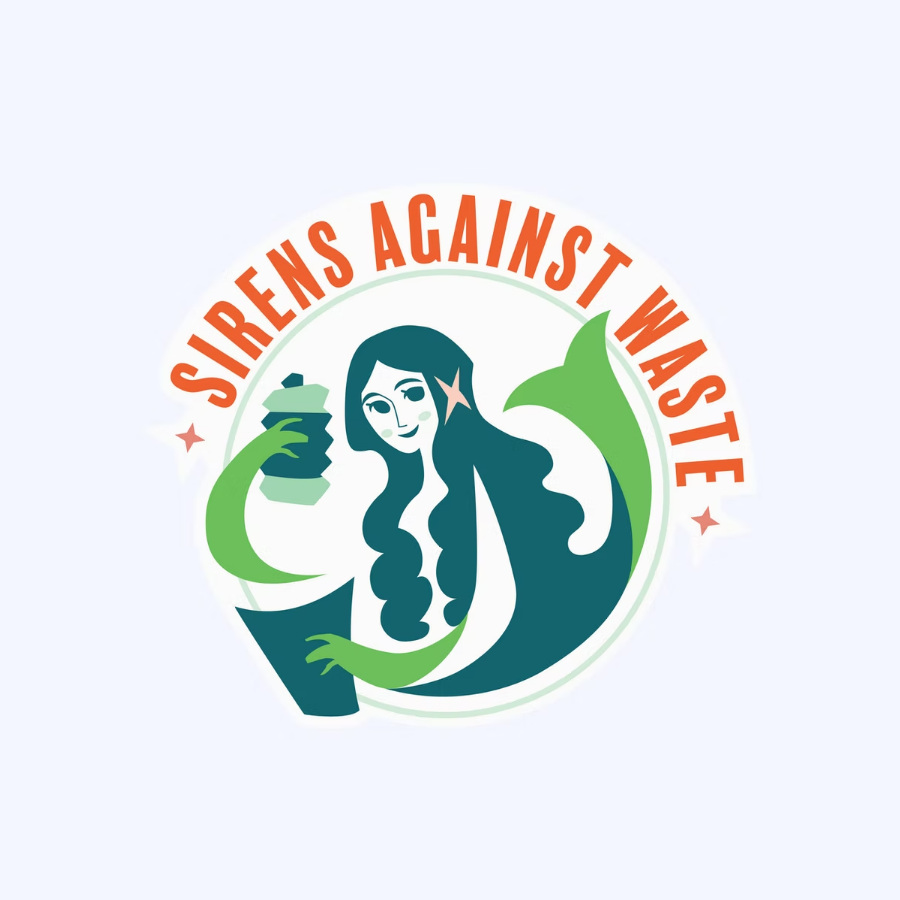

Concept project Brand identity / Campaign design
Sirens Against Waste
A playful visual identity for a fictional coastal-cleanup organization, designed to make a serious environmental issue feel approachable and invite community participation.

01 / The brief
Project overview
Sirens Against Waste is a concept brand for a community-focused beach-cleanup initiative. I wanted to explore how bright, easygoing visuals could support a serious environmental message without making the organization feel intimidating.
My goal was to develop a recognizable identity that could invite volunteers in and carry across printed materials, reusable merchandise, and social media graphics.
02 / Creative direction
Serious cause.
Friendly face.
The challenge was finding a balance between environmental urgency and a welcoming tone. Instead of leading with alarming imagery, I chose a colorful mascot and a more optimistic visual approach.
Why a siren?
A siren immediately connects the identity to the sea, while a mascot gives the organization a recognizable personality. The flowing tail, star details, and bottle in her hand help tie the character to the coast and the subject of waste.
03 / Visual development
Meet the siren.
I began with a character illustration, then refined the concept into a compact badge with curved lettering. I explored monochrome versions and a bright color treatment to see how the identity would work across different applications.
Select an image to view it larger.
Built to be recognizable.
The curving wordmark frames the illustration, while the simplified character shape helps the mark hold together at different sizes. The black-and-white versions also show how the design translates without relying entirely on color.
04 / In context
Beyond the logo.
To show how the identity could live beyond the screen, I applied the artwork to reusable merchandise and printed pieces. These are presentation mockups for the concept, not products made for a real organization.
06 / Reflection
What the project demonstrates.
This concept brings together character illustration, logo development, print applications, and social media design in one visual system. The goal throughout was to make the identity welcoming and energetic while keeping the issue of ocean pollution at the center of the message.
← Back to all projects